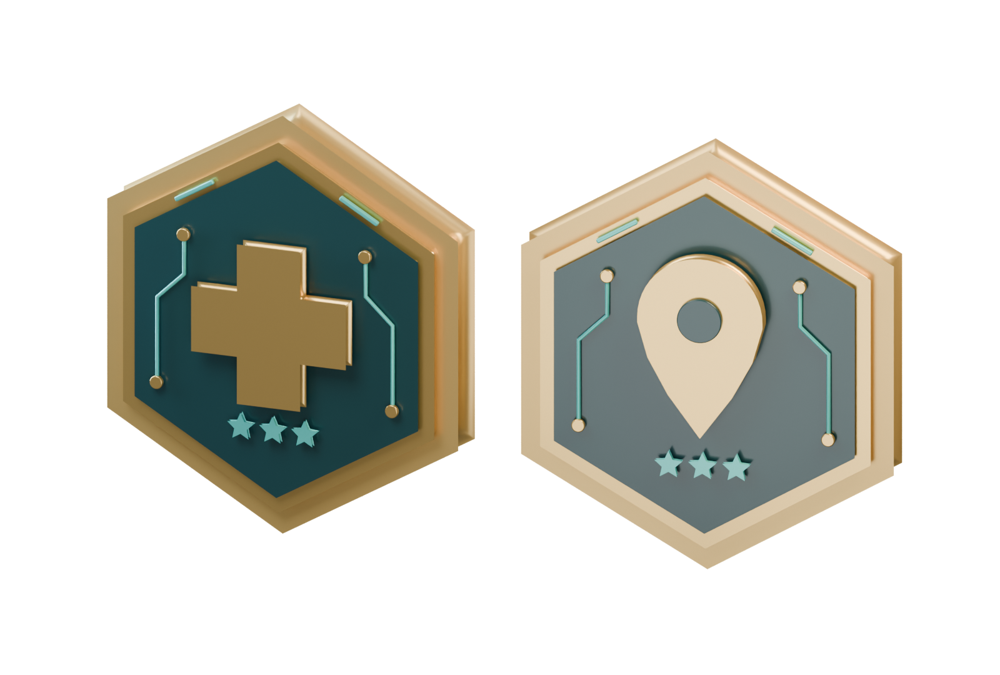
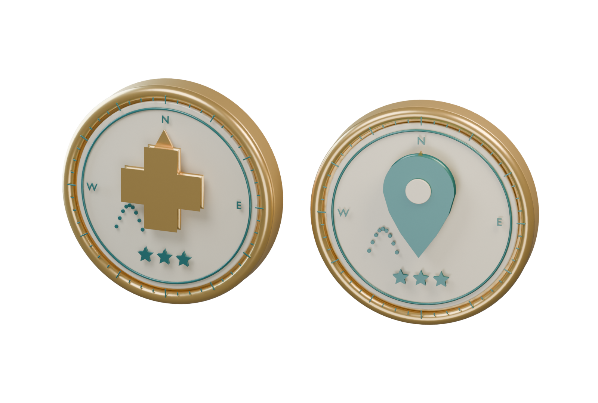
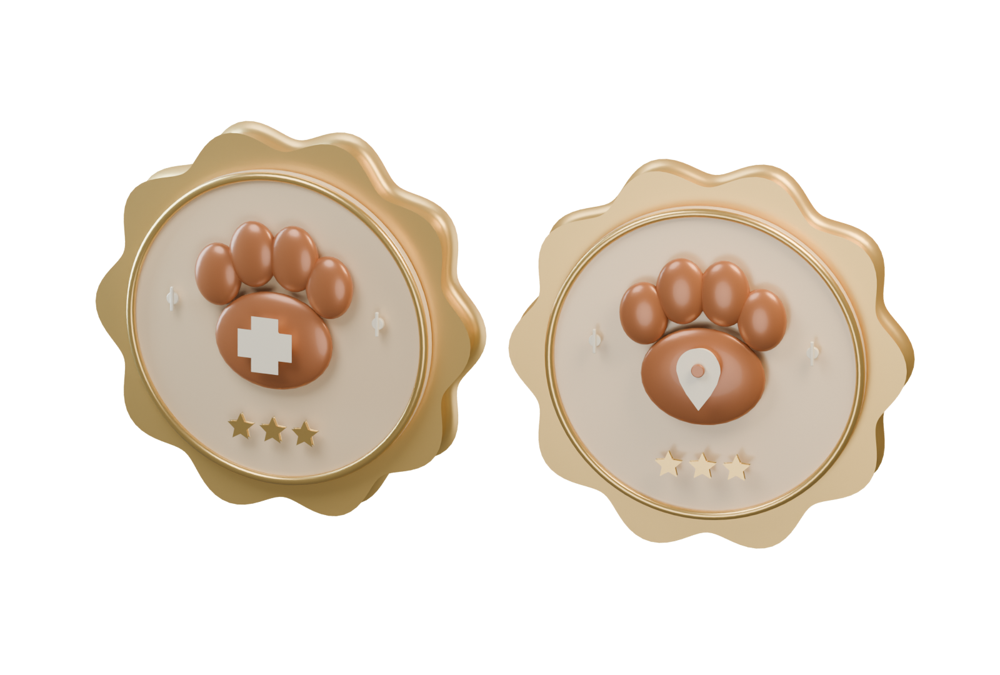

四款獎牌提案 · Blender 立體建模 · 金、銀、銅完整系列
深藍琺瑯 × 月桂浮雕典雅、有榮譽感

六角切面 × 青綠電路俐落、有專業感

象牙錶盤 × 路線刻度呼應跑點與探索

柔和花邊 × 立體熊掌親切、呼應熊熊滾
深藍琺瑯襯托立體金屬徽記。雙側月桂、細緻齒邊與星等，讓成就像一枚值得收藏的紀念章。
背面保留成就類別與星等，可在個人頁翻轉展示。
上排藥局、下排縣市；左至右為銅、銀、金。